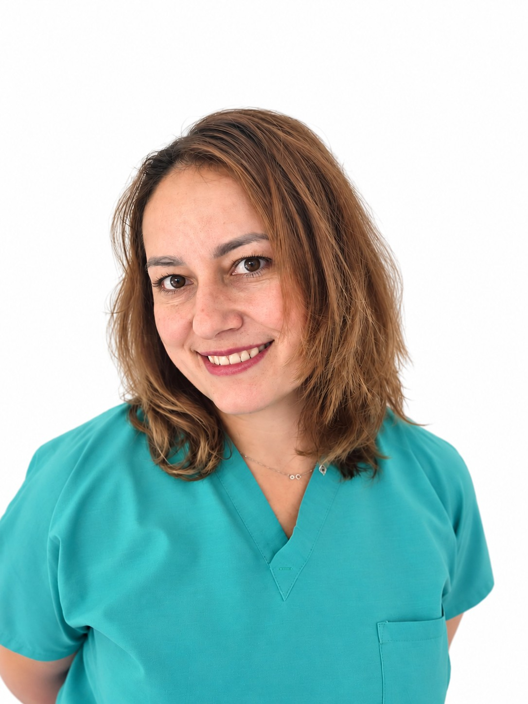

L’équipe du cabinet du Dr Benjamin Darmon
Dans un désir de toujours proposer des soins répondant aux dernières techniques (implantologie, parodontologie, esthétique dentaire), l’équipe soignante maintient son niveau de connaissance théorique et pratique en continu, avec une attention particulière portée au bien-être du patient.

Dr Benjamin Darmon
Chirurgien-dentiste, Implantologie et chirurgie pré-implantaire- Diplômé de la Faculté de Chirurgie dentaire de Paris VII
- Certificat Hospitalier d’Implantologie Orale, Hôpital Saint-Antoine, Paris XII
- DIU de Carcinologie Buccale et Cervico-faciale, Institut Gustave Roussy (Villejuif)
- Ancien responsable du certificat d’implantologie orale de l’Hôpital Saint-Antoine (2012–2022)
- Ancien membre du bureau de la Société Odontologique de Paris (SOP), 2017–2023
- Enseignant au DU d’implantologie de l’Hôpital de la Pitié-Salpêtrière
- Intervenant au congrès de l’ADF (Association Dentaire Française)
- Chairman de congrès internationaux d’implantologie ATTOI
- RPPS 10005137442

Dr Victoire Leclercq
Chirurgien-dentiste, Parodontologie- Certificat d’Études Supérieures Universitaires de Parodontologie (CESUP), UFR d’odontologie de Montrouge
- Suivi parodontal, détartrage et prévention des maladies des gencives
- RPPS 10109193416
Prendre rendez-vous avec le Dr Leclercq pour la parodontologie

Salomé Journo
Assistante dentaire, prothésiste dentaire- Assistance au fauteuil
- Asepsie, stérilisation
- Assistance en implantologie

Nadia Buta
Assistante dentaire- Assistance au fauteuil
- Asepsie, stérilisation
- Assistance en implantologie
Rencontrez l’équipe au cabinet
245 avenue Daumesnil, Paris 12e, sur rendez-vous.